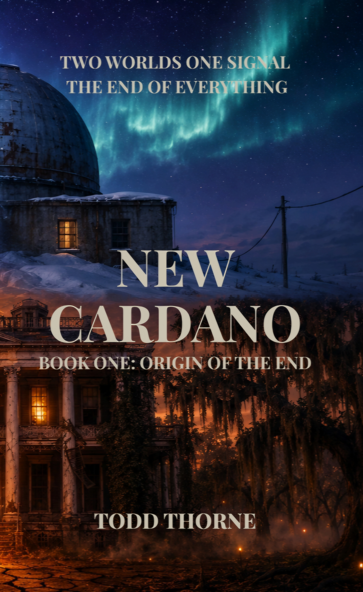

Industrialist • Visionary
Charles Cardano
Once one of Louisiana’s most successful oilmen, Charles sees Blast Off as a final chance to restore prosperity to Monroe and leave behind a meaningful legacy.
Book One of the New Cardano Series
Origin of the End
What if salvation came in a glowing bottle?

The Story
What if salvation came in a glowing bottle?
In the quiet town of Monroe, Louisiana, where faith, hard work, and tradition still shape everyday life, a mysterious stranger arrives with an extraordinary promise. Brilliant yet haunted by years of dangerous experimentation, Dr. Elijah Brinkley claims his revolutionary elixir, Blast Off, can sharpen memory, restore focus, and transform lives.
For aging oil magnate Charles Cardano, whose dream is to restore prosperity to his wife’s hometown, the discovery seems nothing short of miraculous. Together, the two men launch Blast Off on an ambitious path toward nationwide success. As excitement spreads through Monroe, however, whispers of doubt begin to grow. Churchgoers, scientists, and skeptics alike question the glowing drink’s remarkable claims and the true price of its promise.
Thousands of miles away in the frozen wilderness of Siberia, Soviet astronomer Dr. Anton Dubrovsky oversees a remote observatory when he detects an impossible anomaly deep in space. What begins as an unexplained astronomical event soon reveals itself to be something far more terrifying: a vast cosmic intelligence moving relentlessly toward Earth. As its approach begins to alter reality itself, the connection between Monroe’s miraculous revival and the approaching catastrophe becomes increasingly difficult to dismiss.
New Cardano: Origin of the End is a gripping blend of historical fiction, science fiction, and post-apocalyptic suspense. Through the lives of dreamers, believers, scientists, and visionaries, it explores ambition, deception, faith, and the consequences of humanity’s relentless pursuit of progress.
In the end, New Cardano is more than a place. It is the beginning of a prophecy. And the end is only just beginning.
Principal Cast
Six lives converge as a miracle drink transforms Monroe and an impossible threat approaches from the stars.
Industrialist • Visionary
Once one of Louisiana’s most successful oilmen, Charles sees Blast Off as a final chance to restore prosperity to Monroe and leave behind a meaningful legacy.
Executive • Voice of Reason
Intelligent, disciplined, and analytical, Carolina begins noticing the inconsistencies others overlook as Cardano Industries races toward expansion.
Scientist • Inventor
Brilliant, charismatic, and haunted by years of dangerous experimentation, Elijah brings the glowing elixir Blast Off to Monroe.
Physician • Man of Conscience
Monroe’s trusted physician must choose between hope, powerful interests, and the disturbing medical evidence appearing before him.
Maintenance Supervisor • Reluctant Hero
A hardworking husband and father, Hank becomes one of the first people willing to risk everything to expose the truth.
Soviet Astronomer • First Witness
At a remote Siberian observatory, Dubrovsky detects an object that moves unlike anything known to science and refuses to obey accepted laws of physics.
“The universe has always spoken through mathematics. Tonight, it whispered something else.”
The New Cardano Series
Book Two
Hank, Carolina, and Dr. Langowski leave the shelter and attempt to build a peaceful commune in the aftermath. Mad Marve, the Black Baron, is building a dictatorship nearby. Both visions cannot survive in the same territory.
In DevelopmentEmail: ada-forge@proton.me
Mailing Address:
Ada Forge Books
P.O. Box 74
Knoxville, IL 61448